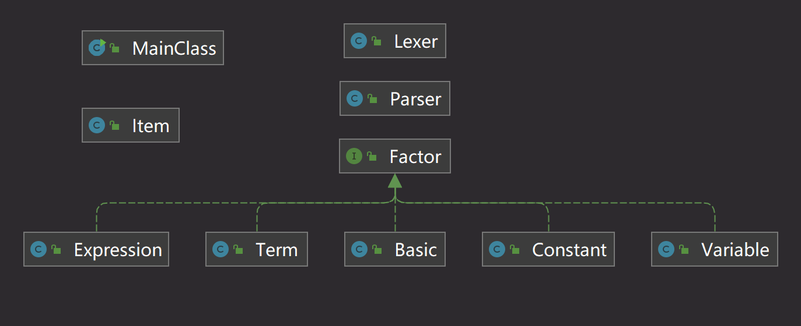
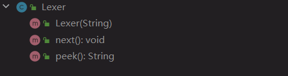
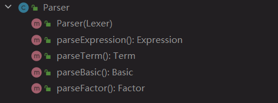
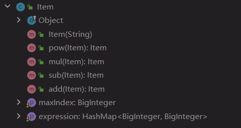

面向对象设计与构造第一单元第一次作业
表达式展开
题目
分析
我们要做的是对单变量多项式的括号展开，并且化简输出，所以我的思路为分为两步：
- 1. 将输入表达式转化为后缀表达式 （展开括号）
- 2. 将后缀表达式计算并化简为顺序结果 （计算结果）
首先，用递归下降法解析输入，将输入的表达式进行化简和拆解，得到一个不含括号的后缀表达式字符串。接着再按照多项式运算规则进行运算并合并同类项，最后结果进行排序，最后输出结果。
基本思路
我的代码分为了两大部分，分别实现两种相互独立的功能，并用main函数实现连接
1.递归下降法求后缀表达式简单介绍一下递归下降算法：
递归下降是一种根据形式化语法对字符串进行解析的算法。
递归下降的思想是对于每一个语法元素，都用单独的函数对其进行读取。其中难点在于因子的解析，使用递归下降时只要直接调用对应的解析函数 parseXXX() 即可。
parseXXX() 的要点在于，调用时要只要保证当前位置恰好在 XXX 的开头，而且调用完他就能解析完这个元素，而具体这些儿子部分是怎么解析的就交给对应的方法。这个方法比较像分治。
-- （此段介绍来自roife's blog）首先对表达式进行预处理
去除所有空白字符
若第一项为符号，则在表达式开头补 0
在表达式中连续的
+/-号，整合成一个+/-号在表达式中
**后面紧跟着的+号，删除之
通过利用形式化表述定义，将表达式分成了四个层次：因子（常量或变量）、基本项（幂）、项（乘除）、表达式（加减），这四种结构对应了四种对象。我们下面分别进行讨论对这些对象的解析：
- 对于因子（常量或变量）的解析：若下一个字符为单目运算符或者是数字或者是变量 x ，则不断看下一个字符是否是数字。如果不是数字，那么说明下一个符号不属于因子，即对因子的解析结束。
- 对基本项（幂）的解析：基本项由因子的幂次方组成，即为
[加减] 因子 ** 带符号整数。当解析到一个因子后，若下一个解析到的为**，那么读入这个符号并做处理，然后下一个符号一定是一个带符号整数，否则，说明基本项的解析结束了。
- 对项（乘除）的解析：项由基本项或因子和乘除符号组成，即为
[加减] 因子 | 项 * 因子，处理方法与基本项相似。
对表达式（加减）的解析：表达式由项和加减符号组成，即为：
[加减] 项 | 表达式 加减 项通过题目所给的形式化表述可以表叫容易地建立层次，并且通过方法的互相调用完成解析。递归下降方法的好处在于，它可以通过方法之间的间接递归调用，非常自然地处理嵌套的表达式（即带嵌套括号的表达式）。
2.后缀表达式计算第1步中所得的后缀表达式中，运算符为
+/-/*/**，操作数为带符号整数 / 变量x。把所有操作数和运算结果视为一系列单项式之和（多项式）
则：
- 对于
带符号整数，视为指数为零，系数为带符号整数的值的单项式
- 对于
变量x，视为指数和系数均为 1 的单项式
- 对于
由于后缀表达式的便利性，因此我们每读到一个运算符，就对最近的两个多项式进行对应运算并返回一个多项式即可
具体实现
总UML类图：

读取处理类
Lexer
- 该类主要目的是对原始表达式进行读取处理，使其按照需要每次使用都能输出一个
操作数/运算符 - 对字符串进行必要的预处理
- 读取数字需要判断正负（即该数前面的
+/-号（如果有）是否是单目运算符）
- 该类主要目的是对原始表达式进行读取处理，使其按照需要每次使用都能输出一个
解析类
Parser
- 使用递归下降法处理表达式，递归地分别对表达式（Expression）、项（Term）、基本项（Basic）、因子（Factor）进行处理
- 若是识别到左括号
(则递归调用parseExpression()先处理括号内的内容即可
多项式类
Item
- 对于多项式的
+/-/*/**操作均在该类中使用公开函数实现，需要时根据运算符类型调用即可 - 重写
toString方法，对保存在该类的各单项式对指数项进行排列后输出
- 对于多项式的
因子类接口
Factor
优化小方法：
- 把
x**2用x*x替换 - 把多项式的首个非负项放在表达式首位显示
- ……
by Tan